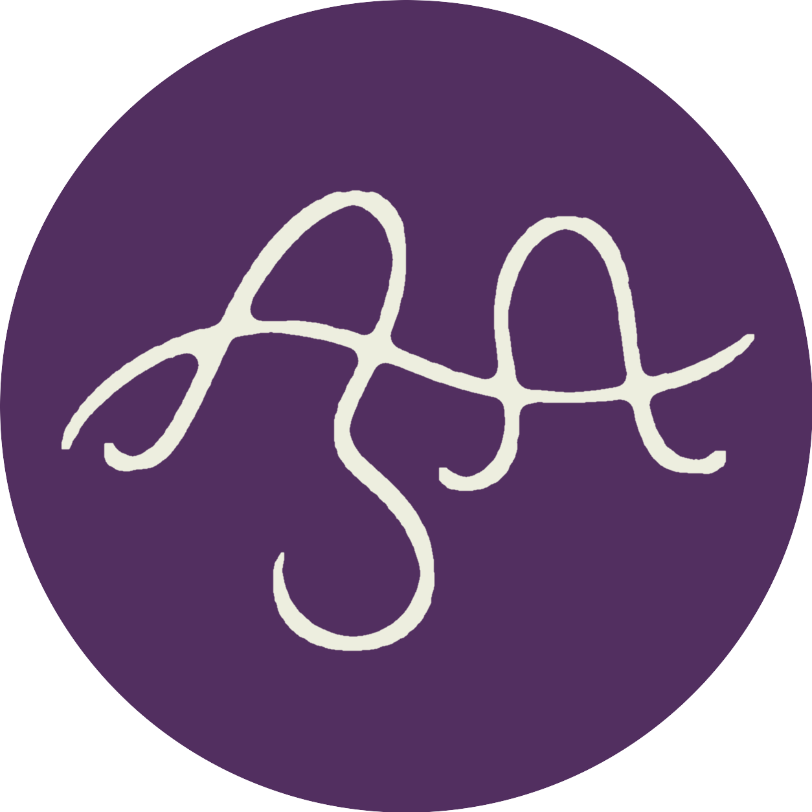
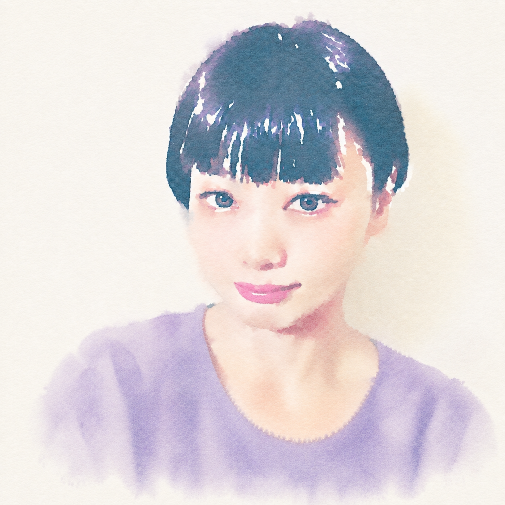

名入れ・命名書
お名前や大切なことばを、記念に残る一枚に。
作品例を見る
アサコ
アバウト
手書きの万年筆文字で、想いをやさしく伝えるお手伝いをしています。
整いすぎない線の揺らぎ、インクの濃淡、紙の余白。
その一つひとつを大切にしながら、心にそっと届く一枚をお書きします。
名入れ、メッセージ、お手紙、サインなど。
「こんなふうに伝えたい」というお気持ちから、ご相談ください。
アサコメモ
最近のマイブームはクリームティーです。スコーンと紅茶の時間を楽しんでいます。

オーダー
文字だけでなく、お贈りになる場面や、贈り先のお相手のことまで考えながらお作りします。
お名前や大切なことばを、記念に残る一枚に。
作品例を見るお祝い、感謝、応援など、想いに合う文字を。
作品例を見る手書きで届けたい文章を、丁寧に代筆します。
作品例を見る活動名やお名前を、世界にひとつのサインへ。
作品例を見る文字に関するご相談を、内容に合わせて承ります。
作品例を見るレタリング・チップ
短いひとことは、余白をたっぷり取ると 万年筆の線やインクの表情がより引き立ちます。
ワークス
見本に加え、それぞれのご依頼について、掲載許可をいただいた作品は実際の作品写真を掲載していきます。
01
紙、インク、文字数など、作品ごとの違いも一緒にご紹介できる枠です。
02
贈る場面や、文字に込めた意図を短く添えると作品の魅力が伝わります。
03
文章量の異なる例を置くと、依頼後の仕上がりをイメージしていただきやすくなります。
04
完成形だけでなく、ラフから仕上がりまでを見せる使い方にも向いています。
05
定型商品に収まらないご相談も、実例が増えましたらこちらに順次掲載します。
フロー
お問い合わせフォームから、ご希望の内容や用途をお聞かせください。
内容・仕様・納期を確認し、お見積りをご案内します。
内容をご確認いただき、ご注文とお支払いをお願いします。
一文字ずつ、心を込めて制作します。
完成品をご確認後、丁寧にお届けします。
オーダー・チップ
ご用途・贈り先のお相手・お好みの雰囲気を教えていただけると、イメージを合わせやすくなります。
レタリング
インクの濃淡やにじみも、その一枚だけの表情として生かします。
柔らかな線と余白を大切に、想いがそっと届く文字を目指します。
一枚一枚、ご用途と贈り先のお相手を思いながら丁寧に書きます。
内容や雰囲気に合わせ、インクの色もご相談いただけます。
ディテール
文字そのものだけでなく、紙の余白まで含めて一枚の表情になるように整えます。
コンタクト
「こんな文字をお願いできますか？」というご相談からで大丈夫です。ご用途やお贈りになりたいお気持ちをお聴かせください。
ぽっと通話に「アサコの部屋」があれば、ぜひお入りください。タイミングが合えばいつでもお話しできます。